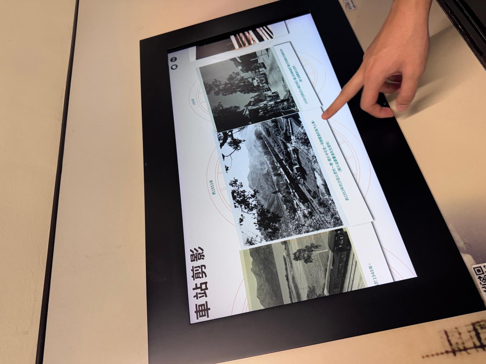

06 · 现代化 / 社区记忆
香港铁路博物馆
作为路线终点，铁路博物馆让我们看见外部现代化如何进入大埔，又如何沉淀为社区日常和集体记忆。
铁路到来以前
博物馆位于1913年建成的旧大埔墟火车站原址，是九广铁路英段首批启用的站点。铁路到来前，大埔已经是新界东北的墟市核心，铁路是顺势放大本地原有的流动与活力，而不是凭空把大埔变成交通枢纽。
一座经过协商的车站
车站设计本身也是一场文化协商。工程遵循殖民铁路体系的标准，立面却使用本地青砖、中式瓦顶与传统装饰，让新的交通设施进入大埔原有的建筑语言。
从交通设施到社区记忆
1910年铁路通车后，本地农产可以经此直送九龙，富善街的经济半径随之扩大。铁路也承载着数代人上学、返工、探亲和出行的日常记忆，汽笛声与月台人流成为跨代的社区感官联结。
从火车站到社区博物馆
1983年车站改建为博物馆后，它并没有成为与居民隔开的古迹展馆。复古车厢、室外座椅和电子互动屏让这里继续融入社区日常；居民捐赠的旧车票、私人照片与口述史，也让官方遗产始终扎根于鲜活的在地记忆。社区不只是参观者，也是历史叙事的共同参与者。
现代化改变了大埔的流动方式，也被大埔人的日常重新赋予了意义。
路线收束从天后宫、富善街、文武庙，到广福桥、旧大埔警署，再到铁路博物馆，这条路线记录的是宗族、墟市、管治、基建与记忆如何共同塑造今天的大埔。

铁路博物馆展厅与历史展陈